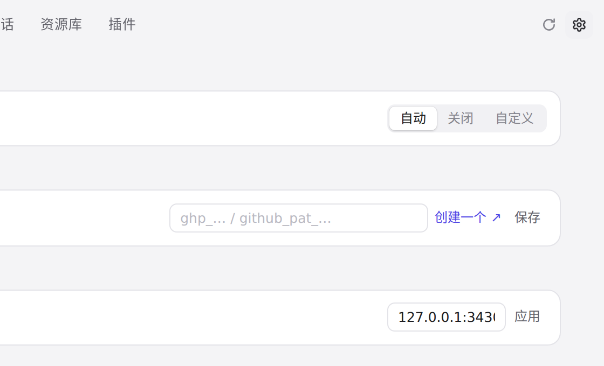
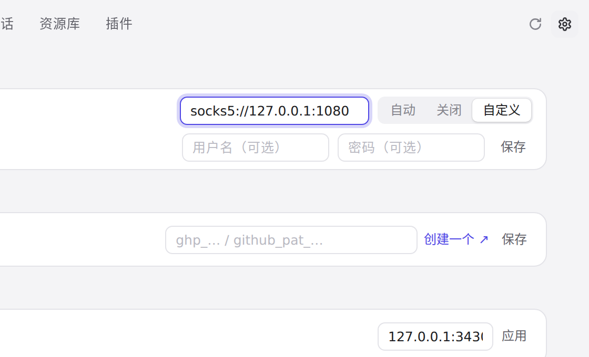
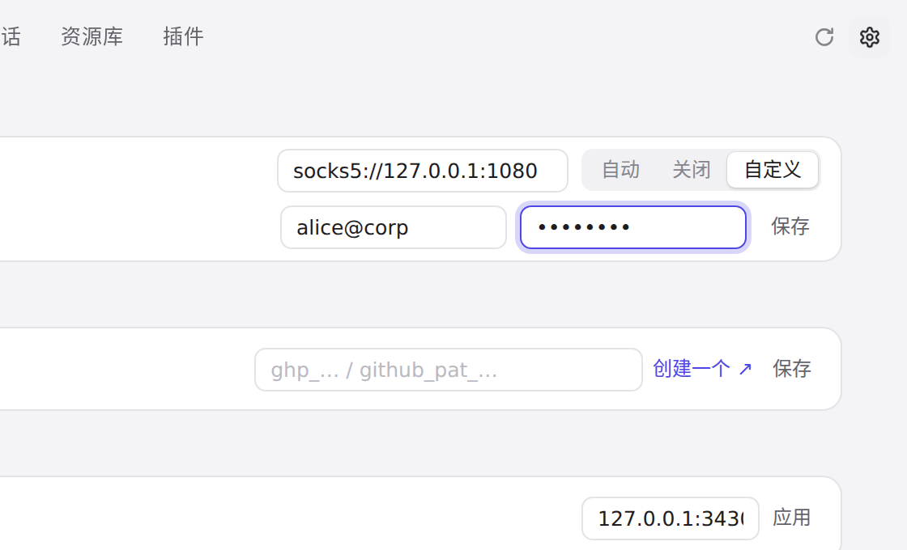
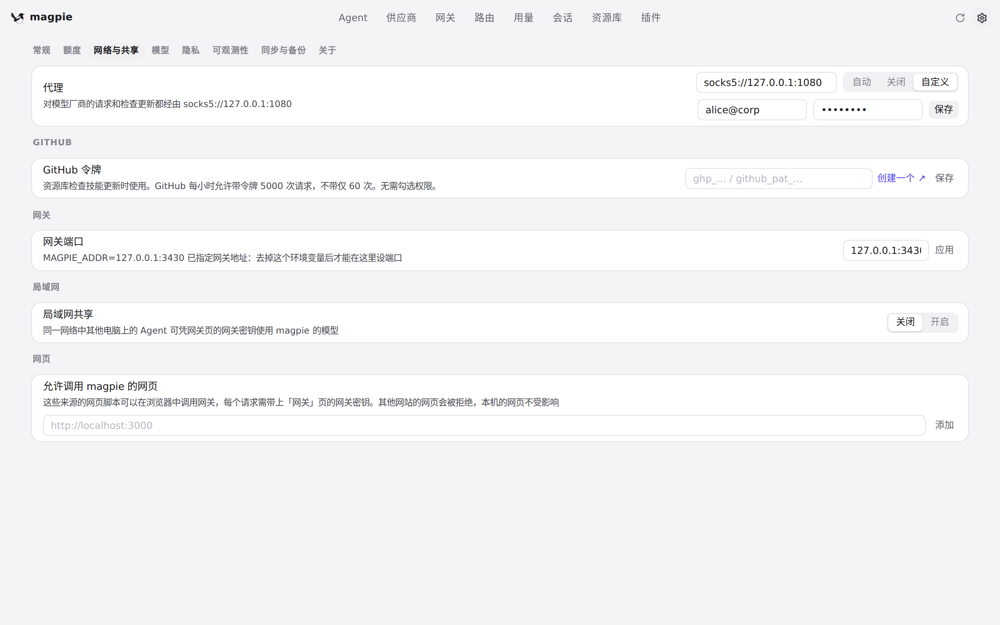
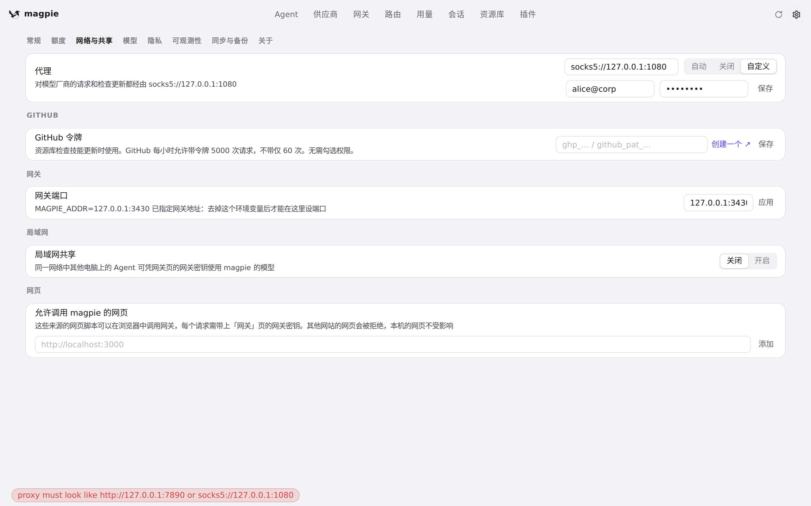
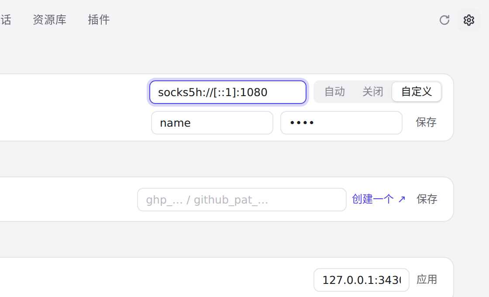
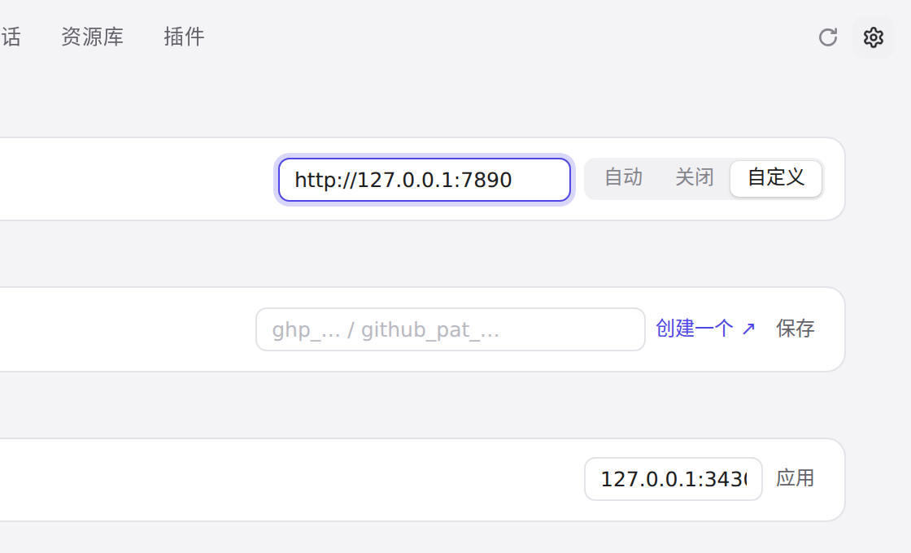

#852 界面预览
commit 120a2c5 · 回到 PR · 设置 › 网络与共享 的代理栏在「自定义」模式下，socks5://、socks5h:// 地址旁新增了可选的用户名、密码输入框与「保存」按钮；凭据从地址中拆出单独保存和回填，密码打码，代理状态文案与无效地址错误都不再带出凭据。
红线是鼠标走过的轨迹，红色圆环是一次点击；底部文字是这一步在做什么。空格暂停，← → 逐段查看。

设置 › 网络与共享：SOCKS5 用户名与密码 · 代理栏：地址输入框和「自动 / 关闭 / 自定义」

设置 › 网络与共享：SOCKS5 用户名与密码 · socks5:// 地址下的用户名、密码输入框与「保存」

设置 › 网络与共享：SOCKS5 用户名与密码 · 用户名与密码都填好后的代理栏

设置 › 网络与共享：SOCKS5 用户名与密码 · 保存之后的代理栏与代理状态文案

地址栏里的凭据与无效地址 · 无效地址后页面上出现的提示

地址栏里的凭据与无效地址 · 地址里带用户名密码时的代理栏

地址栏里的凭据与无效地址 · http:// 地址下的代理栏